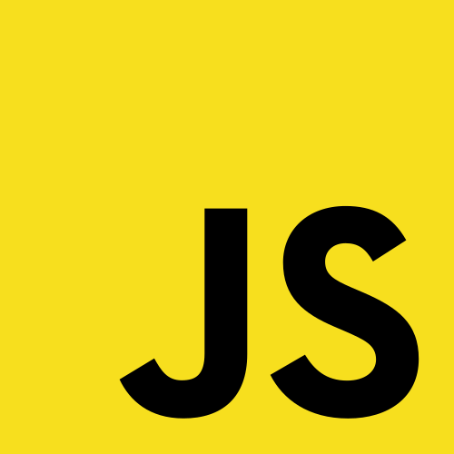

Tools and goals
The main goal of the website is to make styling your website easier and quicker.
The website is fully open-source and all of the files can be found at the Github repository.
Made using HTML5, CSS3, JS and C#.




- HTML5 for page structure
- CSS3 for styling
- JavaScript for frontend functionality
- C# for backend functionality
Here are the tools the site offers, with explanations on each one:
| Tool | Use | How to use |
|---|---|---|
| Color picker | Choosing colors easily | Drag the selector around, and shift the blue slider |
| Text picker | Choosing text styling for html and css | Input custom text, choose between different html elements, choose font types and toggle Bold Italic and Underline |
| Palettes | Creating palettes or finding existing ones | Input 2 colors to create a palette, name it and upload it for others to see, or copy from our palettes or user made palettes. |
Below are some visual examples of the usage of the tools:
-
Color picker
Picking colors and copying them to clipboard in the desired encoding

-
Text picker
Inputting custom text

Choosing HTML element type and toggling Bold, Italic and underline, and choosing font type
-
Palettes
Viewing other palettes and copying their colors
Creating and uploading a palette